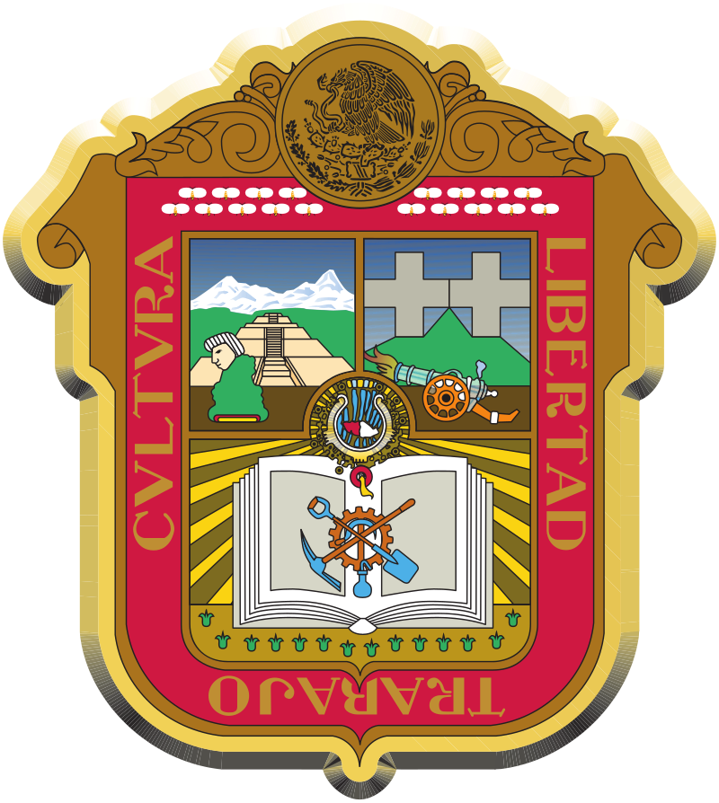

| Nombre de Carreras | Descripción de carreras |
|---|---|
Técnico en Informática

|
La carrera de Técnico en Informática capacita a los estudiantes para analizar, diseñar, desarrollar, instalar y mantener software de aplicación, así como para gestionar sistemas y redes, y resolver problemas informáticos. Se enfocan en el manejo de tecnologías modernas y en la aplicación de conocimientos y habilidades para la gestión informática en organizaciones. |
Técnico en Diseño Asistido por Computadora (DCA)
|
La carrera de Técnico en Diseño Asistido por Computadora prepara a los estudiantes para realizar actividades de diseño gráfico, ilustración, digitalización, producción y creación de mensajes visuales, tanto estáticos como animados. La carrera tiene como objetivo formar técnicos que sean capaces de crear y comunicar proyectos gráficos utilizando tecnologías digitales, aplicando los principios del diseño, la comunicación visual y la innovación. |
| Técnico en Mantenimiento Industrial | La carrera de Técnico en Mantenimiento Industrial tiene como objetivo formar profesionales capaces de mantener, operar e instalar sistemas mecánicos industriales. Esto incluye la utilización de máquinas herramientas convencionales y de control numérico, así como la aplicación de procesos de ajuste y soldadura. |
CBT ISAAC NEWTON
